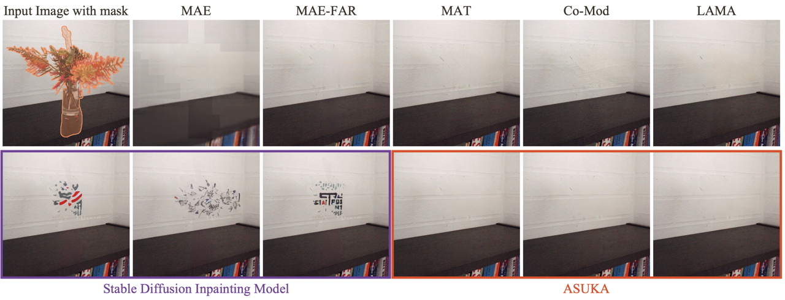
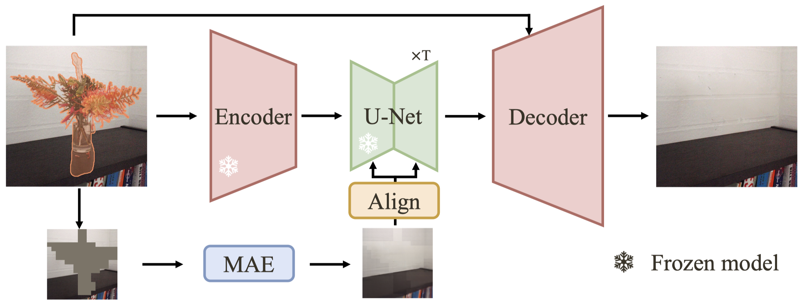

MAE offers stable masked region estimates, yet
falls short in texture detail.
GAN-based inpainting struggles with low fidelity, such as
omitted white horizontal lines.
SD is powerful but unstable, often
introducing random elements and suffers from
mask-unmask color inconsistency.
ASUKA ensures consistency of masked-unmasked areas during diffusion and decoding processes, achieving context-stable and visual-consistent inpainting.
Introduction
- We emphasize stability in inpainting tasks as the generative models suffers from the instability problem;
- We balance fidelity and stability through aligning reconstruction-based and generation-based inpainting models;
- We ensure mask-unmask consistency in the decoding process of SD.

ASUKA adopts the reconstruction-based Masked Auto-Encoder (MAE) to provide a low-resolution stable prior for frozen Stable Diffusion Inpainting Model (SD) to maintain the generation capacity while increasing context-stability. A better decoder is utilized to achieve mask-unmask visual consistency when decoding SD results from latent to image for better fidelity.